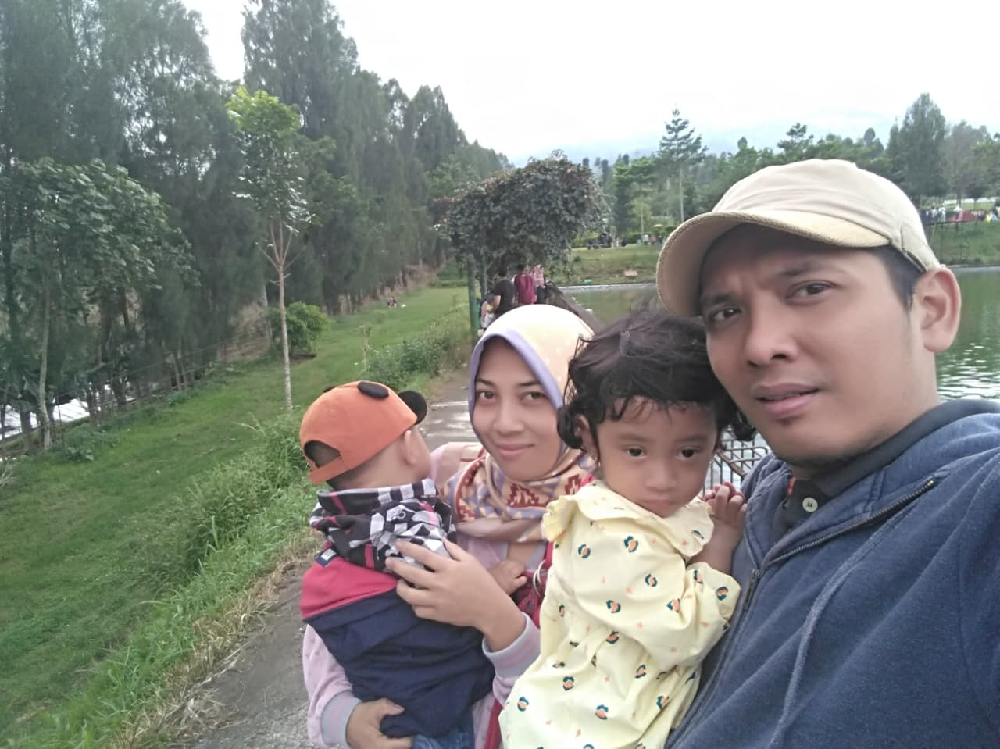
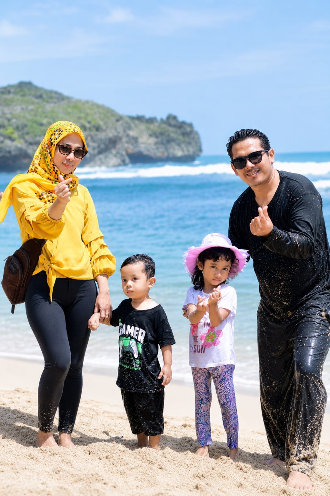
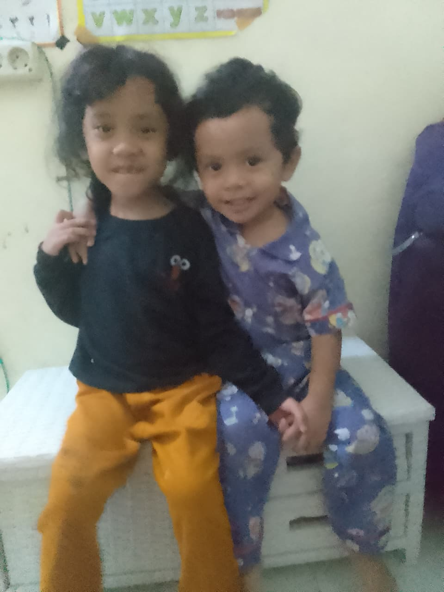
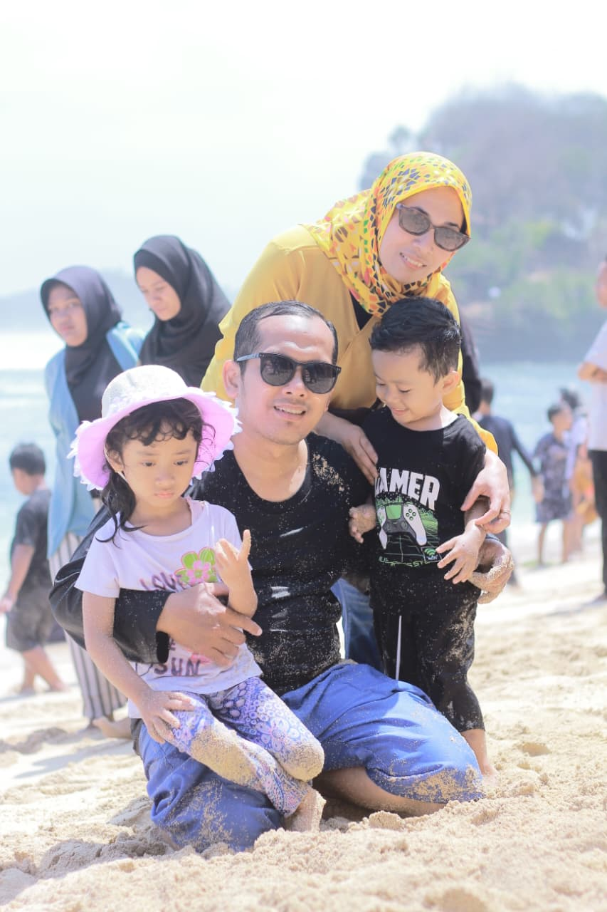
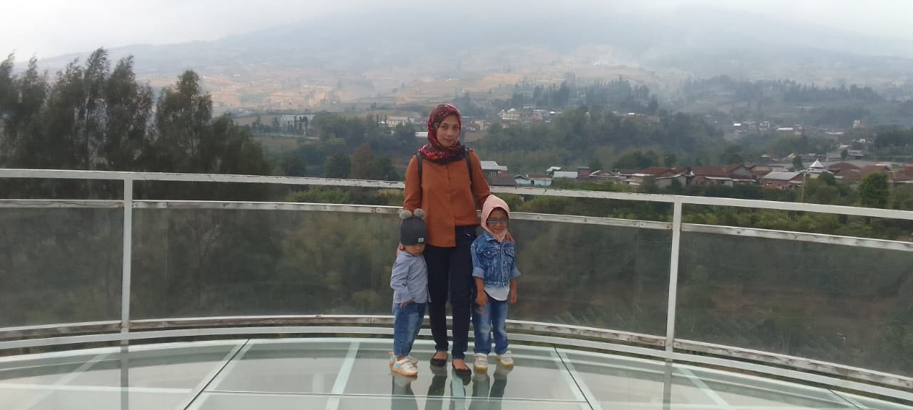

🌻 Untukmu
Selamat Ulang Tahun 🌻
Selamat Ulang Tahun
Jamrud





← geser foto →
Semoga harimu secerah dan sehangat bunga matahari yang sedang mekar 🌻
Semoga tahun ini membawa kebahagiaan, kesehatan yang baik, dan kenangan baru yang indah.
Ketuk amplop untuk membaca surat
Selamat Ulang Tahun 🌻
Semoga hari spesial ini membawa kebahagiaan, kesehatan yang baik, kenangan indah, dan kesuksesan dalam segala hal yang kamu lakukan.
Semoga semua mimpimu menjadi kenyataan, sedikit demi sedikit.
Nikmati hari spesialmu! 🌻